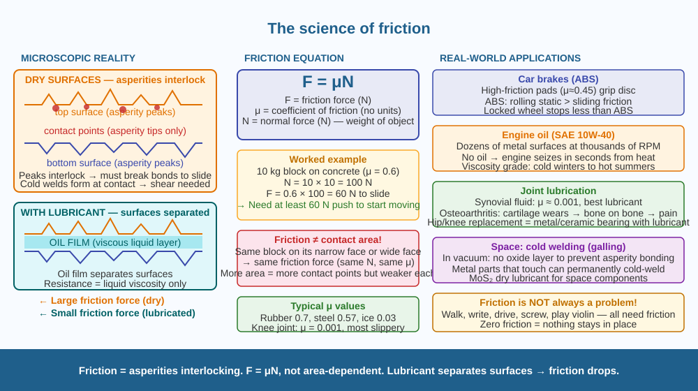

Discover what friction actually is at the microscopic level — why it exists, what controls it, and why lubricants make things slide so much more easily.
You can slide a heavy steel block across polished steel with much less force than across rough wood. But here is the strange part: polished steel looks perfectly smooth, but under a microscope it is covered in tiny peaks and valleys — just smaller ones. Why does friction exist at all if both surfaces appear smooth? And why does adding a drop of oil reduce friction so dramatically?
Friction is a contact force that opposes the relative motion between two surfaces. It has two forms: - Static friction: opposes the start of movement. Always ≥ kinetic friction. - Kinetic (sliding) friction: opposes motion once sliding has started.
The microscopic reality of friction:
No surface is truly smooth. Even polished metal has microscopic peaks called asperities at the nanometre scale. When two surfaces are placed together, they do not contact each other across the entire apparent area — only the highest asperity peaks touch. At these contact points: 1. Mechanical interlocking: Peaks from one surface fit into valleys of the other. Moving them requires breaking or climbing over these interlocking features. 2. Adhesive bonding (cold welding): At the contact points, atoms of the two surfaces are so close that weak intermolecular forces (and sometimes stronger atomic bonds) form between them. At very high contact pressures, microscopic junctions can actually weld together ("cold welds"). Sliding requires shearing these junctions.
The force needed to shear these interlocking and welded asperity contacts is the friction force.
The friction equation:
Friction force (F) = μ × Normal force (N)
Where μ (mu) is the coefficient of friction — a dimensionless number that depends on the materials in contact, not on contact area. This counter-intuitive result (friction does NOT depend on the size of the contact area) is because: - A larger area has more contact points but each contact point carries less pressure → bonds are weaker - A smaller area has fewer contact points but each carries more pressure → bonds are stronger - The total shearing force remains the same
Why lubricants reduce friction:
A lubricant (oil, water, grease) fills the gaps between asperities and creates a thin film that separates the two surfaces. Instead of solid-solid contact (asperities interlocking and welding), the surfaces float on the liquid film. The resistance now comes from the viscosity of the liquid — how much it resists shearing — which is far less than solid-solid asperity shearing. The solid surfaces never actually touch. This directly explains Q3: lubricant separates the surfaces → friction decreases dramatically.
Factors that control friction: - Materials (μ rubber-concrete ≈ 0.7; μ ice-ice ≈ 0.03) - Surface roughness (but not in a simple way — very smooth surfaces can have MORE friction due to increased adhesion at atomic scale) - Temperature (affects viscosity of any lubricant present) - Relative sliding speed (kinetic friction is approximately constant with speed for dry friction)
Imagine two pieces of Velcro pressed together. Pulling them apart requires force to unzip thousands of tiny hooks. Even "smooth" metal surfaces are covered in microscopic Velcro-like asperity peaks that interlock and bond at their tips. A lubricant is like spreading a thin layer of water between the two Velcro surfaces — the hooks can no longer reach each other, and you are now pulling through a viscous liquid instead of shearing metal bonds.

The diagram has two main panels. Left: A cross-section showing two "smooth" metal surfaces under a microscope — both covered in asperity peaks and valleys. Zoom inset: Two asperity peaks touching, showing: (a) mechanical interlock arrows, (b) atomic bond lines at the contact point (cold weld). Right: Same surfaces with lubricant film between them — no asperity contact, only liquid layer. Resistance arrows show large force for solid-solid contact vs small force for lubricated contact. Bottom: Friction equation (F = μN) with a worked example: a 10 kg block on concrete (μ=0.6) → F = 0.6 × 98 N = 58.8 N.
Measure friction without instruments. Place a thick book on a table. Gradually tilt one end of the table (or hold the book and tilt it) until the book just starts sliding. The angle at which it starts sliding is related to the coefficient of static friction: μ = tan(angle). You can roughly estimate: if the book slides when tilted to about 30°, μ ≈ 0.58. Try the same book with a piece of polished plastic between the book and table — the angle changes. Now try a drop of water as lubricant. You can observe the effect of surface material and lubrication on friction directly.
Theoretically, a large block and a small block of the same material on the same surface should need the same force to move them (same μ), because friction does not depend on area. But in practice, if you push a very large flat foam pad and a small foam pad, they feel different. This is because foam deforms and the contact mechanics are different from rigid metal. The Amontons-Coulomb laws of friction (μ independent of area) apply to rigid bodies with dry contact. What might be different about soft materials (rubber, foam, human skin) that makes area matter more? What applications might require knowing this?
What causes friction between two surfaces?
Why is knowing how friction works more useful than just knowing it slows things down?
If a lubricant were applied between two sliding surfaces, what would you predict?
A 5 kg steel block rests on a steel surface (μ static = 0.74, μ kinetic = 0.57). g = 10 m/s². (a) What is the minimum force needed to START the block moving? (b) Once moving, what force is needed to KEEP it moving at constant velocity? (c) If the coefficient of kinetic friction were the same as static friction, what physical prediction would be different about how objects start and stop sliding? (d) Engine oil has viscosity 0.1 Pa·s. If it forms a 0.001 mm film between two surfaces each of area 0.01 m² moving at 1 m/s relative to each other, calculate the shear force (F = η × A × v/d). Compare this to the dry friction force above.
Friction is not always a hindrance. Without friction, you could not walk (your feet would slip), write (pen would slip on paper), or drive (tyres would skid). Screws and nails hold things together because of friction between the threads and material. Musical instruments like violins work because of friction — the bow (rosin-covered horsehair) sticks and releases the string hundreds of times per second, creating vibrations. A world with zero friction would be a world where nothing could be picked up, walked on, or built. Friction is not just a problem to be minimised — it is a fundamental enabler of most human technology.
Friction comes from microscopic asperities on surfaces that interlock and form tiny adhesive bonds. F = μN (not dependent on area). Lubricants separate surfaces with a liquid film → asperities cannot interlock → friction decreases dramatically.